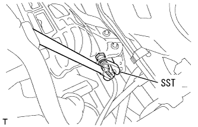

Kunenhi sensor removal |
| 1. Cowl top panel OUT is removed |
reference)| 2. Air cleaner ASSY |
Remove the air cleaner kit and air cleaner hose No.1.
Remove the air cleaner fillyer errage.
Remove the four bolts and remove the air cleaner case, the No.1 air cleannine rets and the air cleannine Retsu.
| 3. Kuunenhe sensor |
Cut the connector of Kunen Hena Sensor.
|  |
Use SST to remove the Kunenhe sensor.